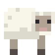

PRIVATE FAMILY SURVIVAL
OUR FAMILY. OUR WORLD.
Stewart FamilyMinecraft Server
A little adventure.
A lot of building together.
Welcome to our family Survival world — a place to build, explore, farm, and make something our own.

Play your way
Java, Bedrock, or console. Find the connection steps for your device.
Connection guide →02 / SETTLE INA helping hand
Personal peaceful mode, three saved homes, backpacks, and easier gathering.
Commands & features →03 / EXPLOREFind your next spot
View the explored world from your phone, tablet, or computer.
World map →Build a home. Leave room for family.
Respect one another’s houses, farms, and storage. Set a home near your base — and have fun!